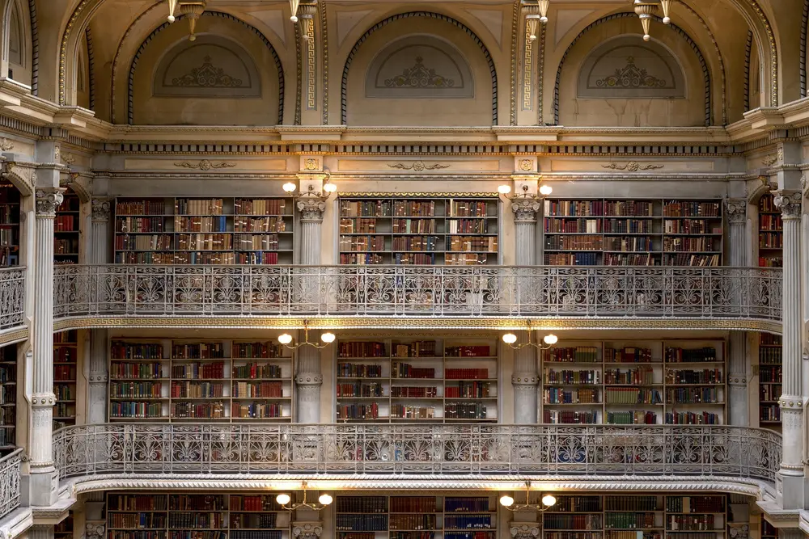

Edinburgh's libraries:
A quiet way to meet the city.
A slow guide to three very different reading rooms, and to spending a rainy afternoon among books instead of queues.

First impressions: a city built on reading
Edinburgh is often seen through its castle and its hills, but some of its most memorable rooms are filled with shelves. A library visit costs little, needs no summit and works in any weather.
Three of the best sit within a few minutes' walk of each other around George IV Bridge and Parliament Square, so you can see all of them without rushing.
Each is a different kind of place: one is a public library open to everyone, one is a national collection with free exhibitions, and one is a private society's library with a famous tea room. Choose the one that matches your mood, not the one that looks best on a list.
The Central Library: a gift to the city
The Central Library on George IV Bridge opened in 1890. It was designed by George Washington Browne and paid for by Andrew Carnegie, who gave £50,000 on the condition that the city adopt the Public Libraries Act. [1]
Browne chose a French Renaissance style. From the street you enter by a short bridge, yet the building drops several floors down towards the Cowgate below, so what looks like a modest front is much taller behind. [2]
Look for the Carnegie motto inside, "Let there be light", and for the domed ceilings. This is a working public library, so treat it like one: keep your voice low and leave desks free for people who are studying.
A library is a room that asks nothing of you except attention.
The National Library of Scotland: free and unhurried
The National Library of Scotland stands on George IV Bridge, close to the Central Library. Visitors can browse its exhibitions, stop at the café, or look through the shop without any ticket. [3]
To use the reading rooms you need a library card, and joining is free. Take proof of identity and address, and check the official website first, because some items need to be requested in advance. It is not a lending library, so you read on site. [3]
If you only have an hour, skip the reading room and spend it in the exhibitions. Pick one display, read it fully, and leave before you feel tired.
You do not have to read anything. Sitting with a coffee in the café and watching students come and go is a perfectly good way to spend the morning.
The Signet Library: a room for special occasions
The Signet Library sits on Parliament Square beside St Giles' Cathedral. It belongs to the Society of Writers to the Signet, a historic legal society, and holds books, manuscripts and other records of Scottish history and culture. [4]
Robert Reid designed the building, with interiors by William Stark, and it was completed in 1822 in time for the visit of King George IV. [5]
Because it is a private society's home, access is not like a public library. Many visitors see the Lower Library by booking afternoon tea at Colonnades, which needs a reservation. Check the venue's own website for current days, prices and any closures for private events. [5]
A suggested day among the shelves
Use this as a loose frame, not a timetable. Swap the order if the weather or your booking requires it.
Morning — The Central Library
Arrive when it opens, wander the floors that are open to visitors, and find the motto and the domes. Keep a notebook with you and write down one thing you notice.
Midday — The National Library
Walk the short distance along George IV Bridge, choose one exhibition, then have lunch in the café. Register for a card only if you truly want the reading rooms.
Afternoon — The Signet Library
If you booked ahead, finish with tea in the Lower Library. If not, walk round Parliament Square and St Giles' instead, and keep the Signet for another trip.
Before you go
- Check opening hours. Libraries often close on Sundays and public holidays, and hours differ between buildings.
- Bring identification. You will need proof of identity and address to join the National Library.
- Book the Signet early. Tea at the Signet Library needs a reservation, and popular days can fill up.
- Keep it quiet. These are places where people study. Switch your phone to silent and ask before taking photographs.
- Travel considerately. Follow staff instructions, do not touch collections, and leave desks and seats free for readers.
Further reading
[1] Canmore — Edinburgh, George IV Bridge, Central Public Library
[2] Historic Environment Scotland — Central Library, George IV Bridge
[3] National Library of Scotland — Visit George IV Bridge
[5] VisitScotland — The Signet Library
This article provides general travel inspiration. Opening hours, access and booking rules change, so always confirm details on each library's official website.